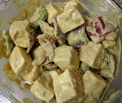
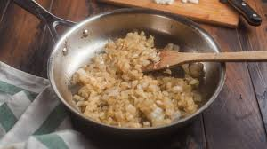
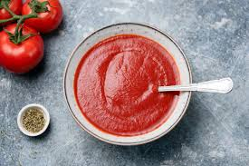
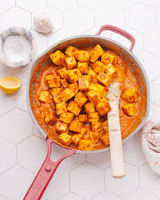
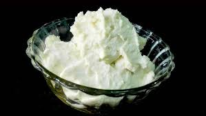

============================================================
🍛 PANEER TIKKA MASALA 🍛
============================================================
Rich • Creamy • Smoky • Restaurant Style

🔗 Full Original Recipe Source
🔖 QUICK MENU • Ingredients • Steps • Gallery • Nutrition • Reviews
============================================================
🍛 PANEER TIKKA MASALA 🍛
============================================================
Rich • Creamy • Smoky • Restaurant Style
+--------------------------------------------------------------+ | 📑 TABLE OF CONTENTS | +--------------------------------------------------------------+ 1️⃣ Time Required 2️⃣ Ingredients 3️⃣ Step-by-Step Instructions 4️⃣ Gallery 5️⃣ Nutrition 6️⃣ Best Served With 7️⃣ Tips & Variations 8️⃣ FAQ 9️⃣ Reviews ★★★★☆ +--------------------------------------------------------------+
+-----------------------------------------------------------+ | ⏱️ TIME REQUIRED | +-----------------------------------------------------------+
| Prep Time | Cook Time | Total Time |
|---|---|---|
| 20 min | 25 min | 45 min |
+-----------------------------------------------------------+ | 🧂 INGREDIENTS | +-----------------------------------------------------------+
+----------------------+ | MAIN INGREDIENTS | +----------------------+
|
+----------------------+ | MARINADE | +----------------------+
|
+-----------------------------------------------------------+ | 👨🍳 STEP-BY-STEP COOKING | +-----------------------------------------------------------+
1️⃣ Marinate the Paneer
Mix yogurt + spices → Coat paneer cubes. |
2️⃣ Sauté the Onions
Heat oil → Add onions → Cook golden. |
3️⃣ Add Tomato Puree
Cook until oil separates. |
4️⃣ Add Marinated Paneer
Mix gently and simmer. |
5️⃣ Add Fresh Cream
Simmer 2–3 minutes for richness. |
6️⃣ Garnish & Serve
Top with coriander. |
+-----------------------------------------------------------+ | 📸 3-COLUMN GALLERY VIEW | +-----------------------------------------------------------+
+-----------------------------------------------------------+ | 🍽️ NUTRITION FACTS | +-----------------------------------------------------------+
| Nutrient | Amount |
|---|---|
| Calories | 320 kcal |
| Protein | 14g |
| Carbs | 12g |
| Fat | 24g |
| Fiber | 3g |
+-----------------------------------------------------------+ | 🥘 BEST SERVED WITH | +-----------------------------------------------------------+
+-----------------------------------------------------------+ | ✨ TIPS & VARIATIONS | +-----------------------------------------------------------+
+-----------------------------------------------------------+ | 👨🍳 CHEF NOTES & FAQ | +-----------------------------------------------------------+💬 Q1: How to keep paneer soft?
Use fresh paneer and avoid over-stirring.
💬 Q2: Substitute for cream?Milk + cashew paste works great.
💬 Q3: How to add smoky flavor?Use the dhungar method.
💬 Q4: Make it healthier?Use less oil & low-fat cream.
+-----------------------------------------------------------+ | ⭐ USER REVIEWS ⭐ | +-----------------------------------------------------------+★★★★☆ 4.7 / 5
"Restaurant-style taste!" – Aditi "Paneer stayed super soft." – Rahul "Loved the smoky flavor." – Pooja
============================================================
🌟 ENJOY YOUR DELICIOUS PANEER TIKKA MASALA 🌟
Made with ❤️ at home • Happy Cooking!
============================================================